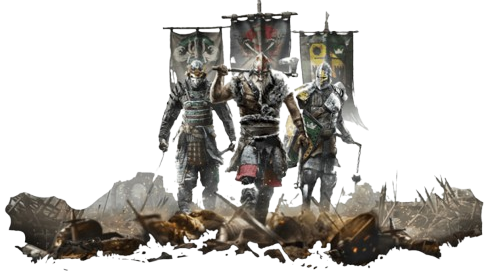

⚔ For Honor Fan Corner ⚔
best viewed in 800x600 • headphones recommended • updated: 01/26/2002
Navigation
Site Badge

steal this badge (jk)
Welcome
This is my tiny corner of the internet for For Honor. It’s a sword-fighting game where you pick a hero, learn a moveset, and try not to get folded in the first 20 seconds.
Updates
- 01/26/2002: Added the Heroes page and made the sidebar cleaner.
- 01/20/2002: Put in local images so GitHub Pages actually hosts them.
- 01/10/2002: Started the site. Under construction forever.
External Link
Official For Honor site: Ubisoft - For Honor
The external link uses target="_blank" and rel="noopener" based on common web safety guidance.